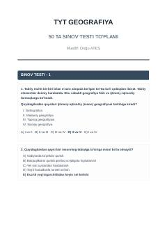

TGGeografiya fanidan 50 ta sinov testi to'plami va javoblari.
Ushbu kitob abituriyentlar uchun TYT geografiya fanidan 50 ta sinov testi va ularning javoblarini o'z ichiga oladi. Testlar orqali geografik tushunchalar, tabiiy va ijtimoiy-iqtisodiy jarayonlar bo'yicha bilimlarni mustahkamlash mumkin.